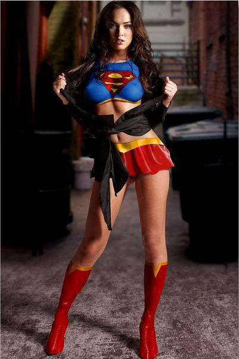

Главная
Задача 7.Реализуйте скрипт, который при наведении мыши на элементы (изображение или гиперссылка), будет внизу страницы показывать блок, в котором указан адрес изображения, и атрибут alt, если это изображение и адрес ссылки и атрибут
title и target, если это гиперссылка. При отсуствии атрибутов — выводится красным предупреждение.

Link One
Link Two
Link Three